CODING AGENTS AS PIXEL WORLD MODELS
traex/GPT-5.6-Sol · common50_0003
点击播放 · 原生 RGB 像素
逐轮保存的候选
回放视频、检查图与代码变化。
每份候选均可单独播放。实际图片检查记录在下方工具轨迹中。
候选 01播放与检查图
点击播放 · 原生 RGB 像素

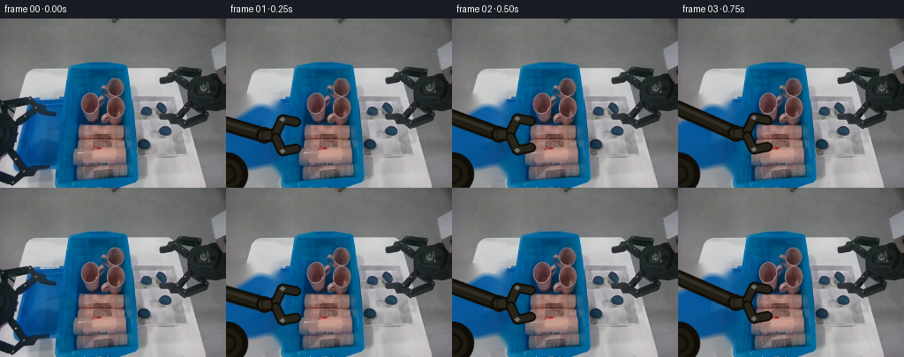
展开代码变化
--- 上一保存版本
+++ 本次保存版本
@@ -0,0 +1,196 @@
+from pathlib import Path
+import cv2
+import numpy as np
+from PIL import Image
+import artifact_io
+
+CASE = Path(__file__).resolve().parent
+W, H = 256, 192
+
+
+def smoothstep(x):
+ x = np.clip(x, 0.0, 1.0)
+ return x*x*(3.0-2.0*x)
+
+
+def poly_mask(shape, points, feather=1.4):
+ m = np.zeros(shape[:2], np.uint8)
+ cv2.fillPoly(m, [np.asarray(points, np.int32)], 255, lineType=cv2.LINE_AA)
+ if feather:
+ m = cv2.GaussianBlur(m, (0, 0), feather)
+ return m.astype(np.float32)/255.0
+
+
+def blend(dst, src, alpha):
+ a = alpha[..., None].astype(np.float32)
+ return np.clip(dst.astype(np.float32)*(1-a) + src.astype(np.float32)*a, 0, 255).astype(np.uint8)
+
+
+def paste_rgba(dst, patch, alpha, center, angle=0.0, scale=1.0):
+ """Anti-aliased rigid 2-D placement of the real bottle pixels."""
+ ph, pw = patch.shape[:2]
+ M = cv2.getRotationMatrix2D((pw/2, ph/2), angle, scale)
+ M[0, 2] += center[0] - pw/2
+ M[1, 2] += center[1] - ph/2
+ warped = cv2.warpAffine(patch, M, (W, H), flags=cv2.INTER_CUBIC,
+ borderMode=cv2.BORDER_CONSTANT, borderValue=(0, 0, 0))
+ wa = cv2.warpAffine(alpha, M, (W, H), flags=cv2.INTER_LINEAR,
+ borderMode=cv2.BORDER_CONSTANT, borderValue=0)
+ return blend(dst, warped, wa)
+
+
+def ik(wrist):
+ """Stable two-link planar arm: both link lengths are constant in all frames."""
+ base = np.array([0.0, 176.0])
+ p = np.array(wrist, np.float64)
+ L1, L2 = 93.0, 105.0
+ v = p-base
+ d = np.clip(np.linalg.norm(v), abs(L1-L2)+.01, L1+L2-.01)
+ ang = np.arctan2(v[1], v[0])
+ a = np.arccos(np.clip((d*d + L1*L1 - L2*L2)/(2*d*L1), -1, 1))
+ th = ang-a # upper, physically consistent elbow solution
+ elbow = base + L1*np.array([np.cos(th), np.sin(th)])
+ return base, elbow, p
+
+
+def line(im, p, q, color, width):
+ cv2.line(im, tuple(np.rint(p).astype(int)), tuple(np.rint(q).astype(int)),
+ color, width, cv2.LINE_AA)
+
+
+def draw_arm(frame, grip, openness, holding):
+ """Render one rigid left robot arm, including subtle fixed-workspace shadows."""
+ cx, cy = grip
+ wrist = np.array([cx-29.0, cy], np.float64)
+ base, elbow, wrist = ik(wrist)
+
+ # Soft tabletop shadow follows the rigid links without changing their shape.
+ shadow = np.zeros((H, W), np.uint8)
+ bp, ep, wp = base+np.array([2, 4]), elbow+np.array([2, 4]), wrist+np.array([2, 4])
+ cv2.line(shadow, tuple(bp.astype(int)), tuple(ep.astype(int)), 90, 14, cv2.LINE_AA)
+ cv2.line(shadow, tuple(ep.astype(int)), tuple(wp.astype(int)), 90, 14, cv2.LINE_AA)
+ shadow = cv2.GaussianBlur(shadow, (0, 0), 4.0).astype(np.float32)/255.0
+ dark = (frame.astype(np.float32)*0.63).astype(np.uint8)
+ frame[:] = blend(frame, dark, shadow*.42)
+
+ # Links: dark outlines, graphite bodies, and a narrow specular edge.
+ for p, q in ((base, elbow), (elbow, wrist)):
+ line(frame, p, q, (8, 14, 17), 15)
+ line(frame, p, q, (19, 29, 32), 10)
+ off = np.array([0.0, -2.0])
+ line(frame, p+off, q+off, (38, 48, 50), 2)
+
+ # Fixed base is deliberately mostly outside image, as in the input view.
+ cv2.circle(frame, tuple(np.rint(base).astype(int)), 24, (6, 12, 16), -1, cv2.LINE_AA)
+ cv2.circle(frame, tuple(np.rint(base).astype(int)), 17, (18, 26, 29), -1, cv2.LINE_AA)
+ cv2.circle(frame, tuple(np.rint(base).astype(int)), 10, (8, 14, 18), 2, cv2.LINE_AA)
+ for j, r in ((elbow, 10), (wrist, 9)):
+ cv2.circle(frame, tuple(np.rint(j).astype(int)), r, (7, 13, 16), -1, cv2.LINE_AA)
+ cv2.circle(frame, tuple(np.rint(j).astype(int)), r-3, (28, 38, 40), -1, cv2.LINE_AA)
+ cv2.circle(frame, tuple(np.rint(j).astype(int)), 2, (99, 106, 104), -1, cv2.LINE_AA)
+
+ # Compact horizontal palm; two articulated fingers close around bottle sides.
+ palm0 = wrist + np.array([-2, -7])
+ palm1 = wrist + np.array([17, 7])
+ cv2.rectangle(frame, tuple(np.rint(palm0).astype(int)), tuple(np.rint(palm1).astype(int)),
+ (8, 15, 18), -1, cv2.LINE_AA)
+ cv2.rectangle(frame, tuple(np.rint(wrist+[-1,-4]).astype(int)),
+ tuple(np.rint(wrist+[15,4]).astype(int)), (31, 41, 42), -1, cv2.LINE_AA)
+
+ gap = 11.0 + 7.0*openness
+ # finger roots and jaws are a single stable mechanism (not deforming blobs)
+ upper = [wrist+[13,-3], wrist+[20,-gap], [cx-8,cy-gap], [cx+7,cy-gap+3]]
+ lower = [wrist+[13, 3], wrist+[20, gap], [cx-8,cy+gap], [cx+7,cy+gap-3]]
+ for pts in (upper, lower):
+ pts = np.asarray(pts, np.int32)
+ cv2.polylines(frame, [pts], False, (5, 11, 14), 10, cv2.LINE_AA)
+ cv2.polylines(frame, [pts], False, (27, 37, 39), 6, cv2.LINE_AA)
+ # steel hinge pins
+ for p in pts[1:3]:
+ cv2.circle(frame, tuple(p), 2, (107, 112, 108), -1, cv2.LINE_AA)
+ return frame
+
+
+def main():
+ rgb0 = np.asarray(Image.open(CASE/'first_frame.png').convert('RGB'))
+ bgr0 = cv2.cvtColor(rgb0, cv2.COLOR_RGB2BGR)
+
+ # Remove only the original left gripper from later frames. The camera,
+ # bins, tray and every untouched object remain exactly stationary.
+ arm_mask = np.zeros((H, W), np.uint8)
+ old_arm = [
+ [(0,88),(18,91),(35,84),(53,89),(64,100),(72,102),(72,115),(57,121),
+ (48,112),(39,108),(31,123),(20,127),(5,115),(0,115)],
+ [(0,101),(18,104),(29,119),(32,144),(29,158),(20,172),(0,171)],
+ [(0,151),(15,158),(29,151),(58,151),(67,160),(64,177),(48,181),(32,192),(0,192)]
+ ]
+ for p in old_arm:
+ cv2.fillPoly(arm_mask, [np.array(p, np.int32)], 255, lineType=cv2.LINE_AA)
+ arm_mask = cv2.dilate(arm_mask, np.ones((5,5), np.uint8))
+ clean_bgr = cv2.inpaint(bgr0, arm_mask, 7, cv2.INPAINT_TELEA)
+
+ # Real topmost cosmetic/laundry bottle, preserved as rigid appearance.
+ x0,y0,x1,y1 = 81,116,146,141
+ bottle = bgr0[y0:y1, x0:x1].copy()
+ bh,bw = bottle.shape[:2]
+ bottle_alpha = np.zeros((bh,bw), np.uint8)
+ # Tight rounded body silhouette avoids carrying blue-bin pixels along.
+ cv2.rectangle(bottle_alpha, (6,4), (58,22), 255, -1)
+ cv2.ellipse(bottle_alpha, (7,13), (7,9), 0, 0, 360, 255, -1, cv2.LINE_AA)
+ cv2.ellipse(bottle_alpha, (58,13), (5,9), 0, 0, 360, 255, -1, cv2.LINE_AA)
+ bottle_alpha = cv2.GaussianBlur(bottle_alpha, (0,0), .7).astype(np.float32)/255.0
+
+ # Once lifted, reveal the products underneath by content-aware reconstruction.
+ bottle_remove = np.zeros((H,W), np.uint8)
+ cv2.rectangle(bottle_remove, (83,119), (144,139), 255, -1)
+ cv2.ellipse(bottle_remove, (86,129), (5,10), 0, 0, 360, 255, -1)
+ bottle_remove = cv2.dilate(bottle_remove, np.ones((3,3),np.uint8))
+ lifted_bg = cv2.inpaint(clean_bgr, bottle_remove, 4, cv2.INPAINT_TELEA)
+
+ grips = np.array([
+ [65,132],[72,132],[82,131],[94,130],[105,129],[113,129],
+ [113,116],[117,99],[126,86],[140,79],[155,80],[170,88],
+ [180,100],[184,114],[184,128],[184,140],[184,142],
+ [170,115],[145,95],[121,88]
+ ], np.float64)
+ openv = np.array([1,1,1,1,.85,.05,.02,.02,.02,.02,.02,.02,.02,.02,.02,.02,1,1,1,1])
+
+ frames = []
+ final_center = (184.0, 142.0)
+ for i in range(20):
+ if i == 0:
+ frames.append(rgb0.copy())
+ continue
+ # Bottle stays physically in bin through grasp; then follows gripper rigidly.
+ moved = i >= 6
+ bg = lifted_bg.copy() if moved else clean_bgr.copy()
+
+ # Arm links go behind held object.
+ fr = bg
+ fr = draw_arm(fr, grips[i], openv[i], holding=(6 <= i <= 15))
+
+ if moved:
+ if i <= 15:
+ center = tuple(grips[i])
+ angle = -1.5 + 1.5*smoothstep((i-6)/9)
+ else:
+ center = final_center
+ angle = 0.0
+ fr = paste_rgba(fr, bottle, bottle_alpha, center, angle)
+ # redraw fingertips so the item is visibly pinched, except after release
+ if i <= 15:
+ cx,cy = center
+ gap = 11.0
+ for yy in (cy-gap+3, cy+gap-3):
+ cv2.line(fr, (int(cx-1),int(yy)), (int(cx+8),int(yy)),
+ (18,27,29), 5, cv2.LINE_AA)
+ frames.append(cv2.cvtColor(fr, cv2.COLOR_BGR2RGB))
+
+ frames = np.stack(frames).astype(np.uint8)
+ assert frames.shape == (20,192,256,3)
+ assert np.array_equal(frames[0], rgb0)
+ artifact_io.save(frames, CASE)
+
+
+if __name__ == '__main__':
+ main()
候选 02播放与检查图
点击播放 · 原生 RGB 像素

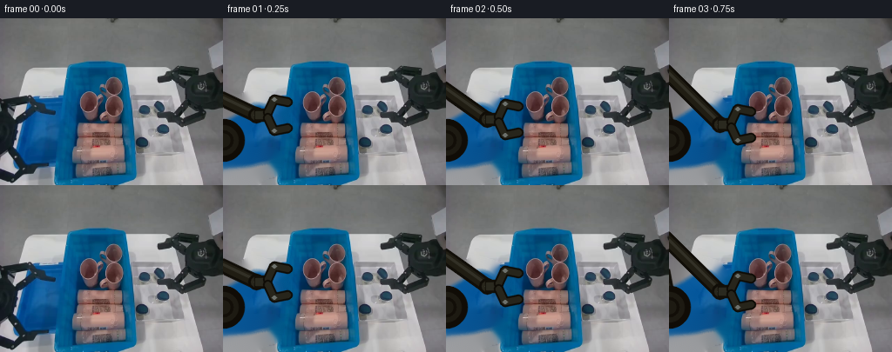
展开代码变化
--- 上一保存版本
+++ 本次保存版本
@@ -41,7 +41,7 @@
def ik(wrist):
"""Stable two-link planar arm: both link lengths are constant in all frames."""
- base = np.array([0.0, 176.0])
+ base = np.array([0.0, 140.0])
p = np.array(wrist, np.float64)
L1, L2 = 93.0, 105.0
v = p-base
@@ -148,7 +148,7 @@
lifted_bg = cv2.inpaint(clean_bgr, bottle_remove, 4, cv2.INPAINT_TELEA)
grips = np.array([
- [65,132],[72,132],[82,131],[94,130],[105,129],[113,129],
+ [61,108],[67,111],[76,116],[87,122],[100,127],[113,129],
[113,116],[117,99],[126,86],[140,79],[155,80],[170,88],
[180,100],[184,114],[184,128],[184,140],[184,142],
[170,115],[145,95],[121,88]
可观测工具轨迹
实际执行的命令与返回图片。
命令 1exit 0
/bin/bash -lc "cat prompt.txt && printf '\\n---RULES---\\n' && cat GENERATION_RULES.md"
命令 2exit 0
/bin/bash -lc "find . -maxdepth 2 -type f -printf '%p %s bytes\\n' | sort"
命令 3exit 0
/bin/bash -lc "cat task_spec.json && sed -n '1,260p' artifact_io.py"
命令 4exit 0
/bin/bash -lc "python - <<'PY'
from PIL import Image
im=Image.open('first_frame.png')
im.resize((1024,768)).save('.tmp/enlarged.png')
PY"命令 5exit 0
/bin/bash -lc "python - <<'PY'
from PIL import Image
im=Image.open('first_frame.png')
im.crop((0,75,130,192)).resize((780,702)).save('.tmp/leftcrop.png')
PY"命令 6exit 0
/bin/bash -lc "python - <<'PY'
try:
import cv2; print('cv2',cv2.__version__)
except Exception as e: print(e)
PY"命令 7exit 2
/bin/bash -lc "cat > /tmp/testbg.py <<'PY'
import cv2, numpy as np
im=cv2.imread('first_frame.png')
m=np.zeros(im.shape[:2],np.uint8)
polys=[np.array([(0,88),(17,92),(34,85),(49,87),(61,97),(63,101),(72,103),(70,117),(56,121),(48,111),(38,107),(30,123),(20,124),(7,112),(0,114)]),np.array([(0,102),(23,104),(31,123),(31,157),(22,171),(0,170)]),np.array([(0,154),(16,161),(30,151),(58,151),(66,162),(62,178),(46,180),(28,192),(0,192)])]
for p in polys: cv2.fillPoly(m,[p],255)
m=cv2.dilate(m,np.ones((5,5),np.uint8))
out=cv2.inpaint(im,m,7,cv2.INPAINT_TELEA)
cv2.imwrite('.tmp/bg.png',out);cv2.imwrite('.tmp/mask.png',m)
PY
python /tmp/testbg.py"命令 8exit 0
/bin/bash -lc "cat > .tmp/testbg.py <<'PY'
import cv2, numpy as np
im=cv2.imread('first_frame.png')
m=np.zeros(im.shape[:2],np.uint8)
polys=[np.array([(0,88),(17,92),(34,85),(49,87),(61,97),(63,101),(72,103),(70,117),(56,121),(48,111),(38,107),(30,123),(20,124),(7,112),(0,114)]),np.array([(0,102),(23,104),(31,123),(31,157),(22,171),(0,170)]),np.array([(0,154),(16,161),(30,151),(58,151),(66,162),(62,178),(46,180),(28,192),(0,192)])]
for p in polys: cv2.fillPoly(m,[p],255)
m=cv2.dilate(m,np.ones((5,5),np.uint8))
out=cv2.inpaint(im,m,7,cv2.INPAINT_TELEA)
cv2.imwrite('.tmp/bg.png',out);cv2.imwrite('.tmp/mask.png',m)
PY
python .tmp/testbg.py"命令 9exit 0
/bin/bash -lc "python - <<'PY'
from PIL import Image
import numpy as np
im=np.array(Image.open('first_frame.png'))
for y,x in [(125,100),(130,120),(120,100),(140,100),(130,85),(130,145),(100,100),(150,50)]: print(y,x,im[y,x])
PY"命令 10exit 0
/bin/bash -lc "cat > generate.py <<'PY'
from pathlib import Path
import cv2
import numpy as np
from PIL import Image
import artifact_io
CASE = Path(__file__).resolve().parent
W, H = 256, 192
def smoothstep(x):
x = np.clip(x, 0.0, 1.0)
return x*x*(3.0-2.0*x)
def poly_mask(shape, points, feather=1.4):
m = np.zeros(shape[:2], np.uint8)
cv2.fillPoly(m, [np.asarray(points, np.int32)], 255, lineType=cv2.LINE_AA)
if feather:
m = cv2.GaussianBlur(m, (0, 0), feather)
return m.astype(np.float32)/255.0
def blend(dst, src, alpha):
a = alpha[..., None].astype(np.float32)
return np.clip(dst.astype(np.float32)*(1-a) + src.astype(np.float32)*a, 0, 255).astype(np.uint8)
def paste_rgba(dst, patch, alpha, center, angle=0.0, scale=1.0):
\"\"\"Anti-aliased rigid 2-D placement of the real bottle pixels.\"\"\"
ph, pw = patch.shape[:2]
M = cv2.getRotationMatrix2D((pw/2, ph/2), angle, scale)
M[0, 2] += center[0] - pw/2
M[1, 2] += center[1] - ph/2
warped = cv2.warpAffine(patch, M, (W, H), flags=cv2.INTER_CUBIC,
borderMode=cv2.BORDER_CONSTANT, borderValue=(0, 0, 0))
wa = cv2.warpAffine(alpha, M, (W, H), flags=cv2.INTER_LINEAR,
borderMode=cv2.BORDER_CONSTANT, borderValue=0)
return blend(dst, warped, wa)
def ik(wrist):
\"\"\"Stable two-link planar arm: both link lengths are constant in all frames.\"\"\"
base = np.array([0.0, 176.0])
p = np.array(wrist, np.float64)
L1, L2 = 93.0, 105.0
v = p-base
d = np.clip(np.linalg.norm(v), abs(L1-L2)+.01, L1+L2-.01)
ang = np.arctan2(v[1], v[0])
a = np.arccos(np.clip((d*d + L1*L1 - L2*L2)/(2*d*L1), -1, 1))
th = ang-a # upper, physically consistent elbow solution
elbow = base + L1*np.array([np.cos(th), np.sin(th)])
return base, elbow, p
def line(im, p, q, color, width):
cv2.line(im, tuple(np.rint(p).astype(int)), tuple(np.rint(q).astype(int)),
color, width, cv2.LINE_AA)
def draw_arm(frame, grip, openness, holding):
\"\"\"Render one rigid left robot arm, including subtle fixed-workspace shadows.\"\"\"
cx, cy = grip
wrist = np.array([cx-29.0, cy], np.float64)
base, elbow, wrist = ik(wrist)
# Soft tabletop shadow follows the rigid links without changing their shape.
shadow = np.zeros((H, W), np.uint8)
bp, ep, wp = base+np.array([2, 4]), elbow+np.array([2, 4]), wrist+np.array([2, 4])
cv2.line(shadow, tuple(bp.astype(int)), tuple(ep.astype(int)), 90, 14, cv2.LINE_AA)
cv2.line(shadow, tuple(ep.astype(int)), tuple(wp.astype(int)), 90, 14, cv2.LINE_AA)
shadow = cv2.GaussianBlur(shadow, (0, 0), 4.0).astype(np.float32)/255.0
dark = (frame.astype(np.float32)*0.63).astype(np.uint8)
frame[:] = blend(frame, dark, shadow*.42)
# Links: dark outlines, graphite bodies, and a narrow specular edge.
for p, q in ((base, elbow), (elbow, wrist)):
line(frame, p, q, (8, 14, 17), 15)
line(frame, p, q, (19, 29, 32), 10)
off = np.array([0.0, -2.0])
line(frame, p+off, q+off, (38, 48, 50), 2)
# Fixed base is deliberately mostly outside image, as in the input view.
cv2.circle(frame, tuple(np.rint(base).astype(int)), 24, (6, 12, 16), -1, cv2.LINE_AA)
cv2.circle(frame, tuple(np.rint(base).astype(int)), 17, (18, 26, 29), -1, cv2.LINE_AA)
cv2.circle(frame, tuple(np.rint(base).astype(int)), 10, (8, 14, 18), 2, cv2.LINE_AA)
for j, r in ((elbow, 10), (wrist, 9)):
cv2.circle(frame, tuple(np.rint(j).astype(int)), r, (7, 13, 16), -1, cv2.LINE_AA)
cv2.circle(frame, tuple(np.rint(j).astype(int)), r-3, (28, 38, 40), -1, cv2.LINE_AA)
cv2.circle(frame, tuple(np.rint(j).astype(int)), 2, (99, 106, 104), -1, cv2.LINE_AA)
# Compact horizontal palm; two articulated fingers close around bottle sides.
palm0 = wrist + np.array([-2, -7])
palm1 = wrist + np.array([17, 7])
cv2.rectangle(frame, tuple(np.rint(palm0).astype(int)), tuple(np.rint(palm1).astype(int)),
(8, 15, 18), -1, cv2.LINE_AA)
cv2.rectangle(frame, tuple(np.rint(wrist+[-1,-4]).astype(int)),
tuple(np.rint(wrist+[15,4]).astype(int)), (31, 41, 42), -1, cv2.LINE_AA)
gap = 11.0 + 7.0*openness
# finger roots and jaws are a single stable mechanism (not deforming blobs)
upper = [wrist+[13,-3], wrist+[20,-gap], [cx-8,cy-gap], [cx+7,cy-gap+3]]
lower = [wrist+[13, 3], wrist+[20, gap], [cx-8,cy+gap], [cx+7,cy+gap-3]]
for pts in (upper, lower):
pts = np.asarray(pts, np.int32)
cv2.polylines(frame, [pts], False, (5, 11, 14), 10, cv2.LINE_AA)
cv2.polylines(frame, [pts], False, (27, 37, 39), 6, cv2.LINE_AA)
# steel hinge pins
for p in pts[1:3]:
cv2.circle(frame, tuple(p), 2, (107, 112, 108), -1, cv2.LINE_AA)
return frame
def main():
rgb0 = np.asarray(Image.open(CASE/'first_frame.png').convert('RGB'))
bgr0 = cv2.cvtColor(rgb0, cv2.COLOR_RGB2BGR)
# Remove only the original left gripper from later frames. The camera,
# bins, tray and every untouched object remain exactly stationary.
arm_mask = np.zeros((H, W), np.uint8)
old_arm = [
[(0,88),(18,91),(35,84),(53,89),(64,100),(72,102),(72,115),(57,121),
(48,112),(39,108),(31,123),(20,127),(5,115),(0,115)],
[(0,101),(18,104),(29,119),(32,144),(29,158),(20,172),(0,171)],
[(0,151),(15,158),(29,151),(58,151),(67,160),(64,177),(48,181),(32,192),(0,192)]
]
for p in old_arm:
cv2.fillPoly(arm_mask, [np.array(p, np.int32)], 255, lineType=cv2.LINE_AA)
arm_mask = cv2.dilate(arm_mask, np.ones((5,5), np.uint8))
clean_bgr = cv2.inpaint(bgr0, arm_mask, 7, cv2.INPAINT_TELEA)
# Real topmost cosmetic/laundry bottle, preserved as rigid appearance.
x0,y0,x1,y1 = 81,116,146,141
bottle = bgr0[y0:y1, x0:x1].copy()
bh,bw = bottle.shape[:2]
bottle_alpha = np.zeros((bh,bw), np.uint8)
# Tight rounded body silhouette avoids carrying blue-bin pixels along.
cv2.rectangle(bottle_alpha, (6,4), (58,22), 255, -1)
cv2.ellipse(bottle_alpha, (7,13), (7,9), 0, 0, 360, 255, -1, cv2.LINE_AA)
cv2.ellipse(bottle_alpha, (58,13), (5,9), 0, 0, 360, 255, -1, cv2.LINE_AA)
bottle_alpha = cv2.GaussianBlur(bottle_alpha, (0,0), .7).astype(np.float32)/255.0
# Once lifted, reveal the products underneath by content-aware reconstruction.
bottle_remove = np.zeros((H,W), np.uint8)
cv2.rectangle(bottle_remove, (83,119), (144,139), 255, -1)
cv2.ellipse(bottle_remove, (86,129), (5,10), 0, 0, 360, 255, -1)
bottle_remove = cv2.dilate(bottle_remove, np.ones((3,3),np.uint8))
lifted_bg = cv2.inpaint(clean_bgr, bottle_remove, 4, cv2.INPAINT_TELEA)
grips = np.array([
[65,132],[72,132],[82,131],[94,130],[105,129],[113,129],
[113,116],[117,99],[126,86],[140,79],[155,80],[170,88],
[180,100],[184,114],[184,128],[184,140],[184,142],
[170,115],[145,95],[121,88]
], np.float64)
openv = np.array([1,1,1,1,.85,.05,.02,.02,.02,.02,.02,.02,.02,.02,.02,.02,1,1,1,1])
frames = []
final_center = (184.0, 142.0)
for i in range(20):
if i == 0:
frames.append(rgb0.copy())
continue
# Bottle stays physically in bin through grasp; then follows gripper rigidly.
moved = i >= 6
bg = lifted_bg.copy() if moved else clean_bgr.copy()
# Arm links go behind held object.
fr = bg
fr = draw_arm(fr, grips[i], openv[i], holding=(6 <= i <= 15))
if moved:
if i <= 15:
center = tuple(grips[i])
angle = -1.5 + 1.5*smoothstep((i-6)/9)
else:
center = final_center
angle = 0.0
fr = paste_rgba(fr, bottle, bottle_alpha, center, angle)
# redraw fingertips so the item is visibly pinched, except after release
if i <= 15:
cx,cy = center
gap = 11.0
for yy in (cy-gap+3, cy+gap-3):
cv2.line(fr, (int(cx-1),int(yy)), (int(cx+8),int(yy)),
(18,27,29), 5, cv2.LINE_AA)
frames.append(cv2.cvtColor(fr, cv2.COLOR_BGR2RGB))
frames = np.stack(frames).astype(np.uint8)
assert frames.shape == (20,192,256,3)
assert np.array_equal(frames[0], rgb0)
artifact_io.save(frames, CASE)
if __name__ == '__main__':
main()
PY
python generate.py"命令 11exit 0
/bin/bash -lc "python - <<'PY'
p='generate.py'
s=open(p).read()
s=s.replace('base = np.array([0.0, 176.0])','base = np.array([0.0, 140.0])')
s=s.replace('[65,132],[72,132],[82,131],[94,130],[105,129],[113,129],','[61,108],[67,111],[76,116],[87,122],[100,127],[113,129],')
open(p,'w').write(s)
PY
python generate.py"命令 12exit 0
/bin/bash -lc "python - <<'PY'
from pathlib import Path
import numpy as np
from PIL import Image
import hashlib, json
z=np.load('pixels.npz')['pixels']
ims=[np.asarray(Image.open(f'frames/{i:02d}.png').convert('RGB')) for i in range(20)]
print('packed',z.shape,z.dtype,'frames',len(ims),ims[0].shape,ims[0].dtype)
print('first exact',np.array_equal(ims[0],np.asarray(Image.open('first_frame.png').convert('RGB'))))
print('unique hashes',len({hashlib.md5(x.tobytes()).hexdigest() for x in ims}))
print('files',[(x,Path(x).stat().st_size) for x in ['pixels.npz','index.html','inspection.png','generate.py']])
PY"视觉工具实际返回图片 1
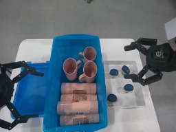
视觉工具实际返回图片 2

视觉工具实际返回图片 3
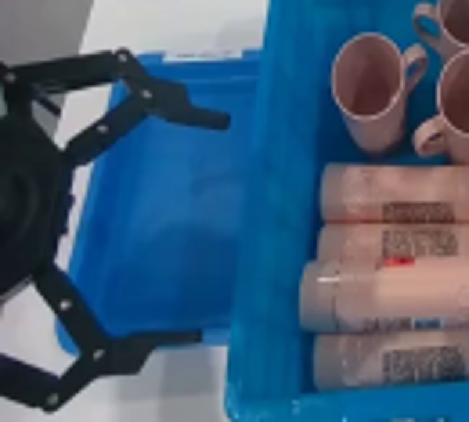
视觉工具实际返回图片 4
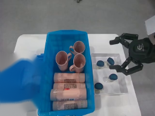
视觉工具实际返回图片 5
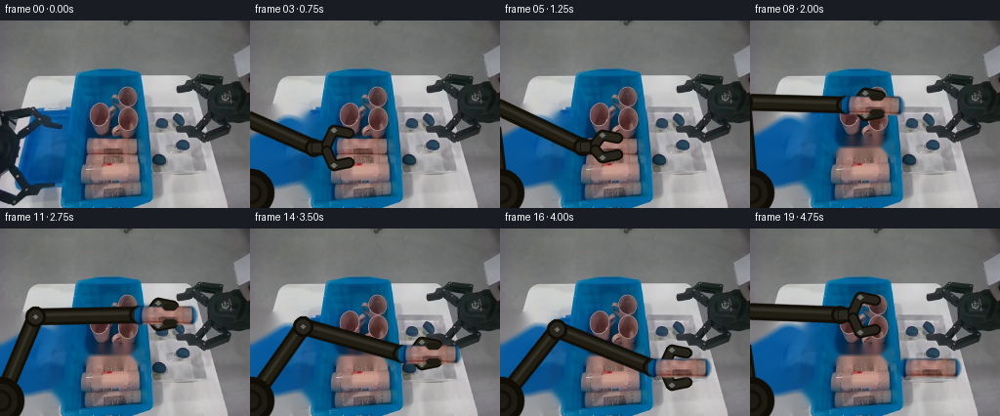
视觉工具实际返回图片 6

视觉工具实际返回图片 7
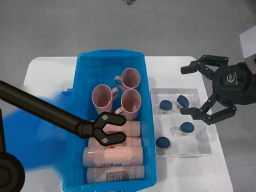
视觉工具实际返回图片 8
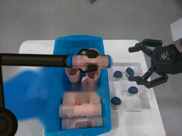
视觉工具实际返回图片 9
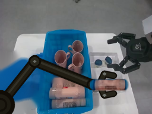
视觉工具实际返回图片 10
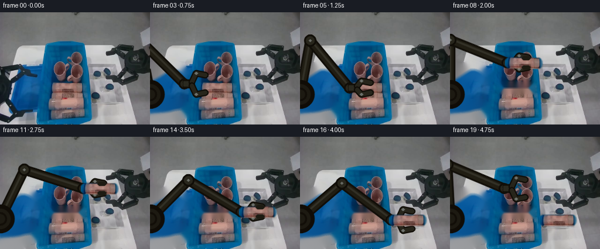
视觉工具实际返回图片 11
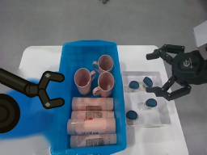
保存候选 2 份；完成命令 12 次；可验证图片返回 11 张。原始 API 响应与完整日志保留在本地。